(가) [앞부분 줄거리] 문기는 숙모의 심부름으로 고기를 사러 갔다가 고깃간 주인의 실수로 거스름돈을 더 받는다. 친구 수만이의 꾐에 넘어가 그 돈으로 공, 쌍안경, 만화책 등을 사고 남은 돈으로 환등 기계를 사기로 약속한다.
삼촌 앞에 나가 무릎을 꿇고 앉지 않을 수 없었다. 삼촌은 잠잠히 식사를 계속한다. 그 상 밑에, 안반 뒤에 숨겨 두었던 공이 와 있다. 상을 물릴 임시에 삼촌은 입을 열었다.
"너 요새 학교에 매일 갔었니?"
"네."
삼촌은 상 밑에 있는 그 공을 굴려 내며,
"이거 웬 공이냐?"
"수만이가 준 공이에요."
"이것두?"
하고 삼촌은 무릎 밑에서 쌍안경을 꺼내 들었다.
"네."
"수만이란 얼마나 돈을 잘 쓰는 아인지 몰라두 이 공은 오십 전은 줬겠구나. 이건 못 줘두 일 원은 넘겨 줬겠구."
그리고 삼촌은, "수만이란 뭣 하는 집 아이냐?"
문기는 고개를 숙이고 앉아 말이 없다. 삼촌은 숭늉을 마시고 상을 물렸다.
㉠"네 입으로 수만이가 줬다니 네 말이 옳겠지. 설마 네가 날 속이기야 하겠니. 하지만 남이 준다고 아무것이고 넙적넙적 받는다는 것두 좀 생각해 볼 일이거든."
삼촌은 다시 말을 계속한다. "말 들으니 너 요샌 저녁두 가끔 나가 먹는다더구나. 그것두 수만이에게 얻어먹는 거냐?"
문기는 벌겋게 얼굴이 달아 수그리고 앉았다. 삼촌은 잠시 묵묵히 건너다만 보고 있더니 음성을 고쳐 엄한 어조로,
"어머님은 어려서 돌아가시구 아버지는 저 모양이시구, 앞으로 집안을 일으킬 사람은 너 하나야. 성실치 못한 아이들하고 열려 다니다 혹 나쁜 데 빠지거나 하면 첫째 네 꼴은 뭐구, 내 모양은 뭐냐? 난 너 하나는 어디까지든지 공부도 시키구 사람을 만들어 주려구 애쓰는데 너두 그 뜻을 받아 주어야 사람이 아니냐."
그리고 삼촌은 어떻게 뒤툭 맘 한번 잘못 가졌다가 영 신세를 망치고 마는 예를 이것저것 들어 말씀하고는 이후론 절대 이런 것 받아들이지 말라는 단단한 다짐을 받은 후 문기를 내보냈다.
문기는 아랫방에 내려와 혼자 되자 삼촌 앞에서보다 갑절 얼굴이 달아올랐다. 지금까지 될 수 있는 대로 생각지 않으려고 힘을 써 오던 그 편에 정면으로 제 몸을 세워 놓고 보지 않을 수 없었다. 그러자 자기라는 몸은 벌써 삼촌의 이른바 나쁜 데 빠지고 만 것이었다. 그야 자기는 ㉡수만이가 시켜서 한 일이니까 잘못이 없다는 것이지만 당초에 그것은 제 허물을 남에게 밀려는 얄미운 구실이 아니고 뭐냐. 그리고 문기는 이미 삼촌을 속였다. 또 써서는 아니 될 돈을 쓰고 말았다. 아아, 일찍이 어머니를 여의고, 아버지란 사람은 일상 천 냥 만 냥 하고 허한 소리만 하면서 남루한 주제에 거처가 없이 시골, 서울로 돌아다니는 사람이고, 어려서부터 문기를 길러 낸 사람이 삼촌이었다. 그리고 조카의 장래를 자기의 그것보다 더 중히 알고 염려하며 잘되어 주기를 바라는 삼촌이었다. ㉢그 삼촌의 기대에 어그러지지 않는 인물이 되어 보이겠다고 엊그제도 주먹을 쥐고 결심하던 문기가 아니냐. 생각할수록 낯이 뜨거워지는 일이다.
(나) [중간 부분 줄거리] 문기는 공과 쌍안경을 버리고 남은 돈을 고깃간 안마당에 던진다. 그러나 돈을 내놓으라는 수만이의 협박을 이기지 못해 숙모의 돈을 훔치고, 그 일로 숙모 집 심부름꾼 점순이가 누명을 쓰고 쫓겨난다.
학교엔 갔다. 첫 시간은 수신 시간. 그리고 공교로이 제목이 '정직'이다. 선생님은 뒷짐을 지고 교단 위를 왔다 갔다 하며 거짓이라는 것이 얼마나 약한 것이고 정직이 얼마나 귀하고 중한 것인가를 누누이 말씀한다. 그리고 안경 쓴 선생님의 그 눈이 번쩍하고 문기 얼굴에 머물렀다 가고 가고 한다.
그럴 때마다 문기는 가슴이 뜨끔뜨끔해진다. 문기는 자기 한 사람에게 들리기 위한 정직이요 수신 시간인 듯싶었다. 운동장에서도 문기는 풀이 없다. 사람 없는 교실 뒤 버드나무 옆 그런 데만 찾아다니며 고개를 숙이고 깊은 생각에 잠기거나 팔짱을 끼고 왔다 갔다 하기도 한다. 그러다 누가 등을 치면 소스라치게 깜짝깜짝 놀란다.
언제나 다름없이 하늘은 맑고 푸르건만 문기는 어쩐지 그 하늘조차 쳐다보기가 두려웠다. 자기는 감히 떳떳한 얼굴로 그 하늘을 쳐다볼 만한 사람이 못 된다 싶었다. 언제나 다름없이 여러 아이들은 넓은 운동장에서 마음대로 뛰고 마음대로 지껄이고 마음대로 즐기건만 문기 한 사람만은 어둠과 같이 컴컴하고 무거운 마음에 잠겨 고개를 들지 못한다. 무엇보다도 문기는 전날처럼 맑은 하늘 아래서 아무 거리낌 없이 즐길 수 있는 마음이 갖고 싶다. 떳떳이 하늘을 쳐다볼 수 있는, 떳떳이 남을 대할 수 있는 마음이 갖고 싶었다.
……(중략)……
"저는 마땅히 받아야 할 벌을 받은 거예요."
하고 문기는 눈을 감으며 한 마디 한 마디 그러나 똑똑하게 처음서부터 끝까지 먼저 고깃간 주인이 일 원을 십 원으로 알고 거슬러 준 것, 그 돈을 써 버린 것, 그리고 또 불장 안의 돈을 자기가 훔쳐 낸 것, 이렇게 하나하나 숨김없이 자백을 하자 이때까지 겹겹으로 몸을 싸고 있던 허물이 한 꺼풀 한 꺼풀 벗어지면서 따라 마음속의 어둠도 차차 사라지며 밝아지는 것을 문기는 확실히 깨달을 수 있었다. 마음이 맑아지며 따라 몸도 가뜬해진다.
내일도 해는 뜨고 하늘은 밝아지리라. 그리고 문기는 그 하늘을 떳떳이 마음껏 쳐다볼 수 있을 것이다.
ㄱ. ㉡은 문기가 자신의 잘못을 정당화하려던 생각이다.
ㄴ. 문기는 결국 ㉡을 제 허물을 남에게 밀려는 구실이라고 스스로 판단한다.
ㄷ. ㉢을 통해 문기가 삼촌의 기대를 부담스럽게 여겨 피하려 했음을 알 수 있다.
ㄹ. ㉢은 문기의 부끄러움과 마음속 갈등을 더욱 깊게 만든다.
윗글에서 문기는 ⓐ 삼촌에게 사실대로 말해야 한다는 마음과 꾸중이 두려운 마음 사이에서 갈등한다. 이는 ⓑ 한 인물의 마음속에서 두 가지 이상의 욕구가 동시에 일어나서 생기는 내적 갈등이다. 문기는 결국 ⓒ 거짓말을 하는 쪽을 선택하였고, 혼자 남은 뒤 ⓓ 자신이 이미 나쁜 데 빠졌다는 사실을 깨닫는다. 따라서 이 장면에서 ⓔ 문기의 마음속 갈등은 완전히 해소된다.
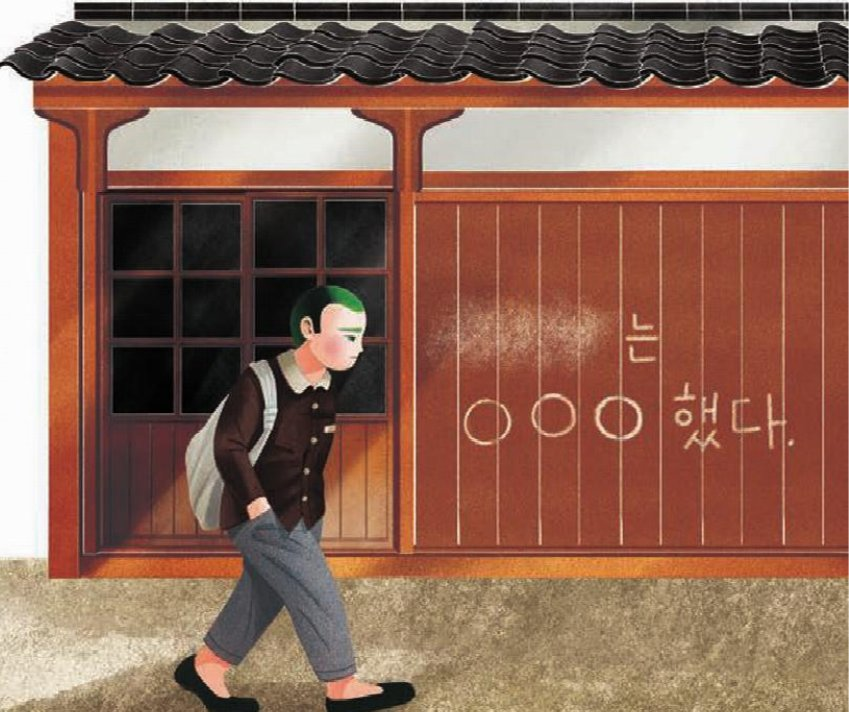
수만이는 '김문기는 ○○○했다.'라는 낙서를 써 놓으며 문기를 협박하였다.
[앞부분 줄거리] 코뿔소 노든은 어려서 가족을 잃고 코끼리 고아원에서 코끼리들과 함께 자랐다. 코끼리 고아원에서는 바깥세상으로 나갈 코끼리를 고르는 테스트가 있다.
노든에게도 선택의 날이 다가오고 있었다. 노든은 늘 선택의 날이 오면 고아원에 남는 쪽을 택하리라고 생각해 왔다. 여생을 이곳에서 보낸다면 평화롭게 살 수 있을 것이라고, 새로 들어오는 어린 코끼리들을 도와주면서 의미 있게 살 수 있을 것이라고. 그런데 자꾸만 머뭇거리게 되었다. 그 이유를 스스로도 알 수가 없었다.
노든은 생각이 많아졌다. 그에게는 긴 코 대신 뿔이 있었고, 왜 자신에게 뿔이 있는지가 궁금했다. 전에 까마귀에게 들었던 이야기가 떠올랐다. 어쩌면 고아원 밖으로 나가 다른 코뿔소들을 만나면 알 수 있을지도 모른다는 생각이 들었다. 노든은 고작 그런 이유 때문에 고아원에 남는 것을 주저하는 스스로가 한심했다.
그는 코끼리답게, 지혜롭고 현명하게 생각하려고 했다. 무모한 선택을 해서는 안 된다. 더 멀리 보고 더 많은 것을 고려해야 한다. 그렇게 되뇌었다. 마음을 다잡은 노든은 할머니 코끼리에게 고아원에 남겠다고 말했다. 할머니 코끼리가 기뻐해 줄 것이라고 생각했지만, 기대와 다른 대답이 돌아왔다.
"하지만 너에게는 궁금한 것들이 있잖아. 네 눈을 보면 알아. 지금 가지 않으면 영영 못 가. 직접 가서 그 답을 찾아내지 않으면 영영 모를 거야. 네가 떠나는 건 슬픈 일이지만 우리는 괜찮을 거야. 더 넓은 세상으로 가. 우리가 너를 만나서 다행이었던 것처럼, 바깥세상에 있을 또 다른 누군가도 너를 만나서 다행이라고 여기게 될 거야."
테스트가 하루 앞으로 다가왔지만 노든은 마음을 정하지 못하고 있었다. 코끼리 고아원에 남고 싶은 마음과 바깥세상을 보고 싶은 마음 사이에서 갈팡질팡했다. 그때 코끼리들이 긴 코를 천천히 흔들며 노든에게 다가와 말했다.
"여기, 우리 앞에 훌륭한 한 마리의 코끼리가 있네. 하지만 그는 코뿔소이기도 하지. 훌륭한 코끼리가 되었으니, 이제 훌륭한 코뿔소가 되는 일만 남았군그래."
소설에서 갈등은 인물이 겪는 대립과 충돌을 말한다. 갈등은 크게 한 인물의 마음속에서 서로 다른 생각이나 욕구가 부딪치는 내적 갈등과, 인물과 인물, 인물과 사회, 인물과 자연 사이에서 일어나는 외적 갈등으로 나뉜다. 갈등은 사건을 전개하는 원동력이 되며, 인물이 갈등을 해결하는 과정에서 인물의 성격과 작품의 주제가 드러난다.
| 갈등의 성격 | 내용 | |
|---|---|---|
| ① | 내적 갈등 | 고아원에 남을지 바깥세상으로 나갈지에 대한 고민 |
| ② | 외적 갈등 | 노든과 코끼리들의 대립 |
| ③ | 외적 갈등 | 노든과 사람들의 대립 |
| ④ | 내적 갈등 | 까마귀를 믿을지 말지에 대한 고민 |
| ⑤ | 외적 갈등 | 노든과 자연환경의 대립 |
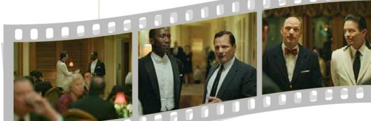
[앞부분 이야기] 1962년 미국 남부 순회공연의 마지막 날, 흑인 피아니스트 돈 셜리는 공연이 열리는 클럽의 식당에서 저녁을 먹으려다 직원에게 막힌다.
돈 셜리 양해 못 하겠습니다. 45분 후에 저 무대에 올라 공연은 할 수 있지만 식사는 안 된다고요?
지배인 죄송합니다. 오랜 전통이라서요. 클럽 규칙이에요.
사회자 안녕하세요? 우리 반이 학교 대표로 이번 마을 축제에 참여하게 되어 "마을 축제에서 무엇을 운영할까?"라는 주제로 지난주에 모둠별로 1차 토의를 진행했습니다. 오늘은 각 모둠의 대표인 윤이음, 김나영, 한재현 학생이 토의자가 되어 2차 토의를 진행하고자 합니다. 토의는 세 분의 토의자가 차례로 의견을 발표하고, 토의자끼리 의견을 교환한 뒤, 청중의 질문을 받고 토의자가 답하는 순서로 진행하겠습니다.
윤이음 저희 모둠에서는 "20××년, 지금 우리 학교는?"이라는 제목으로 사진전을 열자는 의견이 나왔습니다. 어른들께는 과거 학창 시절의 추억을 떠올리는 기회를 만들어 드리고, 어린아이들에게는 앞으로 다니게 될 학교의 이모저모를 미리 살펴보는 시간을 만들어 줄 수 있을 것입니다.
김나영 마을 축제에는 우리 지역의 많은 사람이 참여하므로 모두가 함께 즐길 수 있는 것을 해야 한다고 생각합니다. 그래서 저희 모둠은 아이들과 어른들이 모두 좋아하는 음식인 떡볶이를 만들어 팔 것을 제안합니다. 또한 수익금이 생기면 이웃 돕기 성금으로 기부할 수도 있어 재미와 보람을 모두 얻을 수 있을 것입니다.
한재현 저희 모둠에서는 풍선 아트 체험장을 운영할 것을 제안합니다. 우리 반에는 동아리 시간에 풍선 아트를 배운 학생들이 있습니다. 또한 풍선 아트용 풍선은 별로 비싸지 않아 비용도 적게 들 것입니다.
김나영 한재현 학생에게 질문드리겠습니다. 풍선 아트를 배운 학생들이 있지만 그 수가 매우 적은 것으로 알고 있습니다. 풍선 아트를 배우지 않은 학생들은 맡을 만한 일이 적어 체험장 운영에 적극적으로 참여하지 않으리라 생각합니다.
한재현 배운 학생은 세 명이지만, 배운 학생의 말에 따르면 풍선 아트를 배우는 것이 그리 어렵지 않다고 합니다. 미리 배우면 많은 학생이 참여할 수 있을 것입니다.
윤이음 김나영 학생이 제안한 떡볶이 판매는 매우 재미있고, 인기도 많을 듯합니다. 하지만 우리가 음식을 만드는 것이 쉽지는 않을 것 같습니다. 그리고 재료 구입 비용이 적지 않을 것입니다.
김나영 (고개를 끄덕이며) 윤이음 학생의 말씀처럼 어려운 점이 많다는 것은 인정합니다. 그러나 이런 점들을 함께 해결해 가면 잘 운영하면 멋진 일이 되지 않을까요? 인터넷에서 떡볶이 만드는 방법을 검색하면 관련 동영상이 많이 뜹니다. 동영상을 보고…….
한재현 ㉠(말을 끊고 못마땅한 표정으로) 작년 축제에서처럼 이번에도 어른들이 운영하는 먹거리 장터에서 떡볶이를 팔 텐데, 우리가 만드는 떡볶이가 그것보다 맛있을 거라고 생각하세요? 그리고 계속 불을 사용해야 하기 때문에 위험합니다.
사회자 ㉡다른 토의자의 의견을 끝까지 듣고 자신의 의견을 말씀해 주시기 바랍니다. 김나영 학생, 이어서 계속 발언해 주십시오.
김나영 그런데 한재현 학생의 의견을 들어 보니 저희가 안전 문제를 고려하지 못했네요. 그렇다면 떡볶이 판매보다 안전하면서도 우리 학교를 소개할 수 있는 사진전을 여는 것도 좋을 것 같습니다.
윤이음 그렇다면 주민들의 관심을 끌 수 있는 풍선 아트 체험장을 운영하면서, 기다리는 분들이 관람할 수 있도록 체험장 한쪽에 사진들을 전시하면 어떨까요?
사회자 네, 의견 잘 들었습니다. ㉢마을 축제에서 풍선 아트 체험장과 학교 소개 사진전을 함께 운영하는 것으로 의견이 모아지는 것 같습니다. 그러면 지금까지 토의한 내용과 관련하여 청중의 질문이나 의견을 들어 보겠습니다.
ㄱ. 김나영은 다른 토의자의 의견을 듣고 자신의 의견을 바꾸었다.
ㄴ. 한재현은 풍선 아트 체험장 운영에 대한 질문에 근거를 들어 답하였다.
ㄷ. 윤이음은 두 가지 의견을 함께 실천할 수 있는 대안을 제시하였다.
ㄹ. 토의 결과 떡볶이 판매와 사진전 개최를 함께 운영하기로 하였다.
(가) 1997년 찰스 무어는 미국 로스앤젤레스에서 하와이까지 태평양을 가로지르는 요트 경기를 마치고 캘리포니아주로 돌아가는 길이었다. 바다 멀리서 호릿한 섬이 떠올랐다. 지도를 펼쳐 보니, 섬이 있을 만한 위치가 아니었다. 놀랍게도 그가 발견한 것은 거대한 플라스틱 쓰레기 섬이었다. 그는 훗날 자신의 글에서 당시 상황을 이렇게 회상했다.
"가장 원시적인 바다에서 내가 목격한 것은 원시적인 섬이 아니었다. 내 눈을 의심할 수밖에 없었다. 섬은 플라스틱 더미로 이루어져 있었다. 그 일주일 동안 아열대의 바다를 건너면서, 나는 수많은 페트병과 뚜껑, 포장재 등의 플라스틱 쓰레기를 헤쳐 나가야 했다."
(나) 쓰레기 섬은 북태평양 환류 주변을 떠다닌다. 육지에서 버려진 플라스틱 쓰레기는 빠른 해류를 타고 돌다가 안쪽으로 빠지면서 모이기 시작한다. 과학자들은 그 일부를 조사하여 쓰레기 섬의 크기가 160만 제곱킬로미터에 이른다고 추정하였다. 한반도 면적의 7배에 이르는 어마어마한 크기이다.
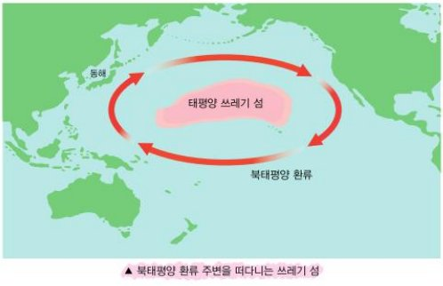
(다) 플라스틱은 우리 생활의 구석구석까지 들어와 자리 잡았다. 플라스틱 덕분에 인간의 생활은 훨씬 더 편리해지고 풍요로워졌다. 그런데 좋은 점이 있으면 나쁜 점도 있는 법이다. 플라스틱 쓰레기가 ㉠골칫거리로 떠올랐다. 1950년에 150만 톤이었던 플라스틱 생산량은 2020년에는 3억 7,550만 톤으로, 70년 동안 무려 250배로 늘었다. 플라스틱은 자연에 존재하지 않았던 물질인데 세상에 나온 지 100년 만에 ㉡지구를 점령했다. 바다로 흘러든 ㉢육지의 배설물은 계속해서 바다에 쌓여 왔다.
(라) 2015년 코스타리카의 해안가에서 코에 플라스틱 빨대가 박힌 바다거북이 발견됐다. 그런데 더 충격적인 일은 플라스틱이 생태계 먹이 사슬의 일부가 되었다는 사실이다. 죽은 고래와 바닷새의 위장에 쌓여 있는 플라스틱이 그 증거이다. 바다로 흘러들어 온 플라스틱 쓰레기는 미세 플라스틱이 되기도 한다. 한국인이 많이 먹는 음식인 젓갈이나 미역, 다시마, 김에서도 미세 플라스틱이 검출됐다. 심지어 인간의 혈액과 모유에서도 발견되었다.
(마) 어떻게 해야 할까? 플라스틱은 이미 인간의 삶에 깊고 넓게 들어와 있으므로 플라스틱을 아예 쓰지 않을 수는 없다. 실행할 수 있는 현실적인 방안은 플라스틱을 적게 사용하고 재활용하는 것이다. 이렇게 함으로써 플라스틱 쓰레기를 줄이고, 어쩔 수 없이 생긴 플라스틱 쓰레기는 잘 관리하여 바다로 유입되는 것을 힘써 막아야 한다. 바다로 흘러들어 와 쌓이는 육지의 배설물은 언젠가는 인간을 비롯한 생명체의 몸속으로 들어와 해를 입힐 것이기 때문이다.
누구냐구요?
이젠 얼굴도 잊으셨네요.
강물 냇물 놔두고
논과 연못에 살았던 송사리예요.
송사리 끓듯 한다는 속담도 있잖아요
예전엔 그렇게 흔했었죠.
송사리 낚시나 그물은 없었어요
우릴 해칠 마음이 없었거든요.
아이들이 간혹
물 담은 고무신이나 어항에 넣긴 했지만
이내 놓아줬어요.
원래가 친했으니까요.
그런데 논에는 농약 연못엔 폐수
이젠 살 데가 없네요.
그래서 꿈에 나타나 부탁하는 거예요.
어디 살 만한 데가 있으면
꼭 좀 알려 주세요.
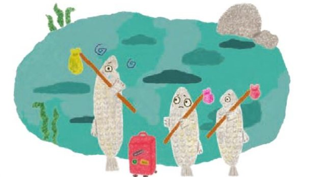
ㄱ. 시인은 송사리가 처한 상황을 안타깝게 바라보고 있다.
ㄴ. 시인은 송사리의 입을 빌려 환경 오염 문제를 비판하고 있다.
ㄷ. '원래가 친했으니까요'는 사람이 예전부터 송사리를 해쳐 왔음을 드러낸다.
ㄹ. '꼭 좀 알려 주세요'에는 생명이 살 수 있는 환경을 만들어 달라는 바람이 담겨 있다.
ㅁ. '송사리 끓듯 한다'는 속담을 활용하여 송사리가 앞으로 더욱 흔해질 것임을 예고한다.
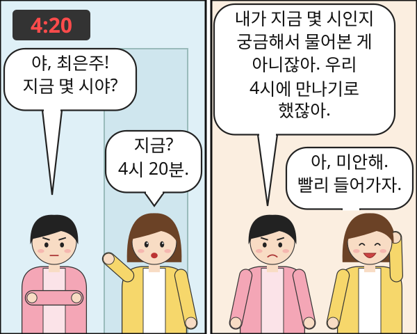
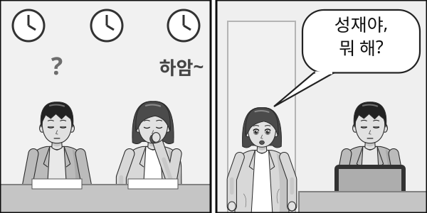
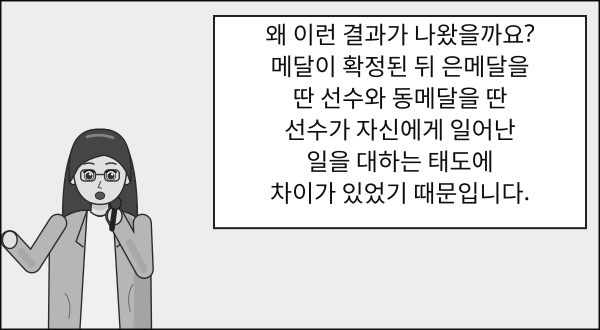
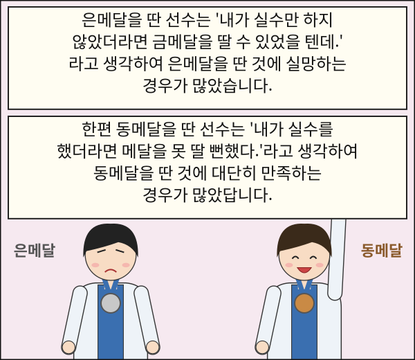
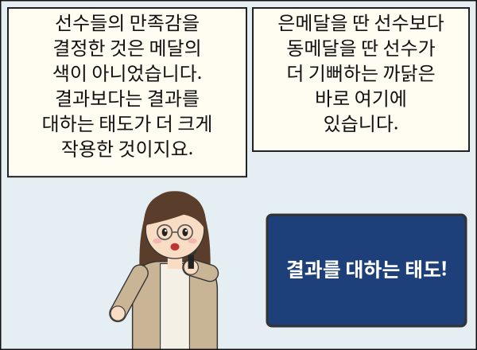
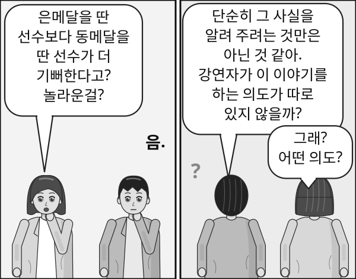
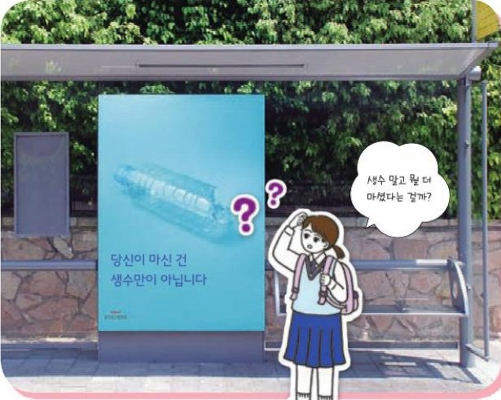
| 기준 | 분류 | |
|---|---|---|
| ① | 형태 | 체언, 수식언, 독립언, 관계언, 용언 |
| ② | 기능 | 형태가 변하는 단어, 변하지 않는 단어 |
| ③ | 의미 | 명사, 대명사, 수사, 동사, 형용사 등 |
| ④ | 형태 | 명사, 동사, 조사 |
| ⑤ | 의미 | 체언, 용언 |
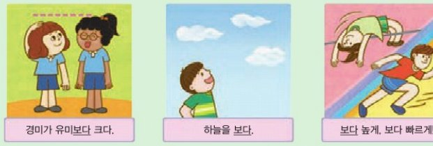
(가) 경미가 유미보다 크다. (나) 하늘을 보다. (다) 보다 높게, 보다 빠르게!
| (가) | (나) | (다) | |
|---|---|---|---|
| ① | 조사 | 동사 | 부사 |
| ② | 부사 | 동사 | 조사 |
| ③ | 조사 | 부사 | 동사 |
| ④ | 동사 | 조사 | 부사 |
| ⑤ | 조사 | 형용사 | 부사 |
세상에 ⓐ그대를 만난 건
내게 ⓑ얼마나 행운이었나!
그대 생각 내게 머뭄으로
나의 세상은 빛나는 세상이 됩니다
ⓒ많고 많은 세상 사람 중에 그대 한 사람
이제는 내 가슴에 별이 된 사람
그대 생각 내게 머뭄으로
나의 세상은 따뜻한 세상이 됩니다
어제ⓓ도 들길을 걸으며
당신을 생각했습니다.
오늘도 들길을 걸으며
당신을 생각합니다.
어제 내 발에 밟힌 풀잎이
오늘 ⓔ새롭게 일어나
바람에 떨고 있는 걸
나는 봅니다.
나도 당신 발에 밟히면서
새로워지는 풀잎이면 합니다
당신 앞에 여리게 떠는
풀잎이면 합니다.
[품사 판별 방법]
① 문장에서 쓰일 때 단어의 형태가 변하는지 살펴본다.
② 단어가 문장에서 어떤 역할을 하는지 살펴본다.
③ 단어가 어떤 공통적인 의미를 나타내는지 살펴본다.
④ 다른 말을 꾸며 주는 단어라면, 꾸밈을 받는 말이 체언인지 용언인지 확인한다.
ㄱ. ⓐ는 사람의 이름을 대신하여 가리키는 대명사로, 체언에 속한다.
ㄴ. ⓑ는 뒤에 오는 '행운이었나'를 꾸며 주는 부사로, 수식언에 속한다.
ㄷ. ⓒ와 ⓔ는 모두 문장에서 쓰일 때 형태가 변하지 않는 단어이다.
ㄹ. ⓔ는 '일어나'를 꾸며 주고 있지만, '새롭다'가 형태를 바꾸어 쓰인 것이므로 형용사이다.
ㅁ. ⓓ는 앞말에 '역시, 또한'의 뜻을 더해 주는 조사로, 관계언에 속한다.